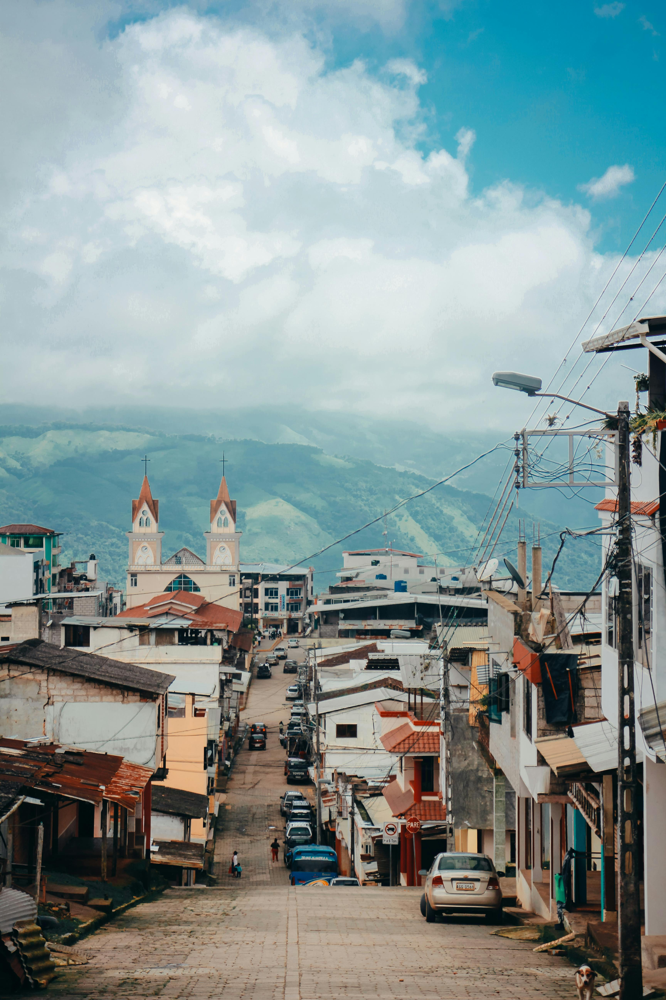

Silvia es un municipio colombiano ubicado en el departamento de Cauca. Se sitúa sobre un valle interandino (2620 metros sobre el nivel del mar) en la cordillera central de Colombia. Está conformado por seis resguardos indígenas: Ambaló, Guambía (Guambianos), Kisgo, Pitayó, Quichaya y Tumburao. La cabecera municipal está ubicada entre el río Piendamó y la Quebrada Manchay, a una distancia de 59 kilómetros de Popayán, la capital del Departamento.